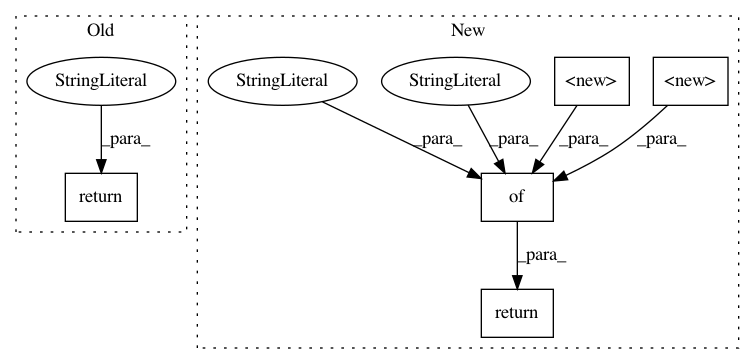

014963415d1cbc895f8c6f9e7f161950e37dc42e,kymatio/scattering2d/backend/torch_skcuda_backend.py,,_get_dtype,#,20
Before Change
def _get_dtype(t):
if isinstance(t, torch.cuda.FloatTensor):
return "float"
elif isinstance(t, torch.cuda.DoubleTensor):
return "double"
def _iscomplex(x):
After Change
Stream = namedtuple("Stream", ["ptr"])
def _get_dtype(t):
dtypes = {torch.float32: "float",
torch.float64: "double"}
return dtypes[t.dtype]
def _iscomplex(x):
return x.shape[-1] == 2
In pattern: SUPERPATTERN
Frequency: 3
Non-data size: 5
Instances
Project Name: kymatio/kymatio
Commit Name: 014963415d1cbc895f8c6f9e7f161950e37dc42e
Time: 2020-02-18
Author: janden@flatironinstitute.org
File Name: kymatio/scattering2d/backend/torch_skcuda_backend.py
Class Name:
Method Name: _get_dtype
Project Name: jazzband/django-debug-toolbar
Commit Name: 4c75e9fdb86f550fd1b6b7554b3ac51d72e2ca81
Time: 2009-11-02
Author: alex.gaynor@gmail.com
File Name: debug_toolbar/panels/version.py
Class Name: VersionDebugPanel
Method Name: content
Project Name: jazzband/django-debug-toolbar
Commit Name: 924361de6c1c87a5dd4db0e37b94380246d85790
Time: 2009-09-18
Author: alex.gaynor@gmail.com
File Name: debug_toolbar/panels/version.py
Class Name: VersionDebugPanel
Method Name: content